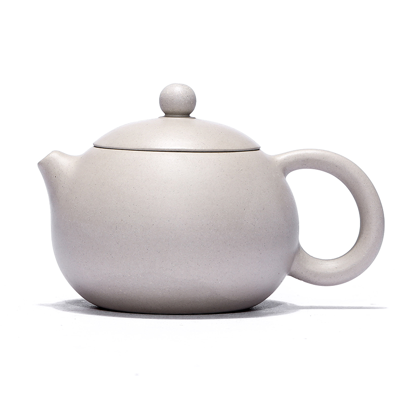
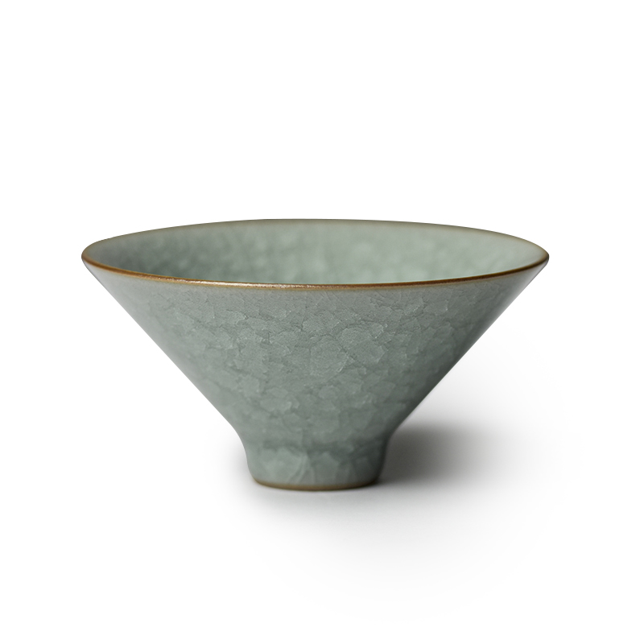
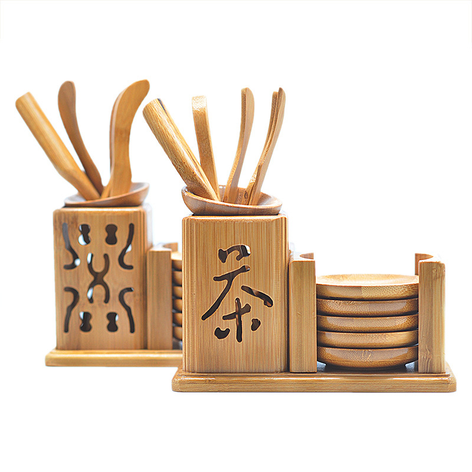
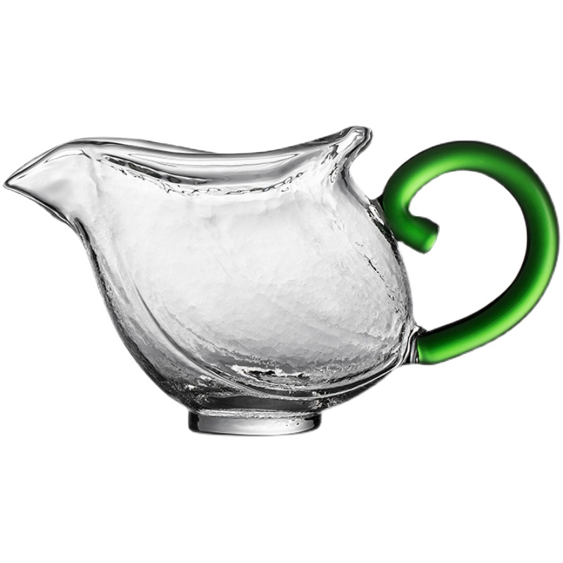
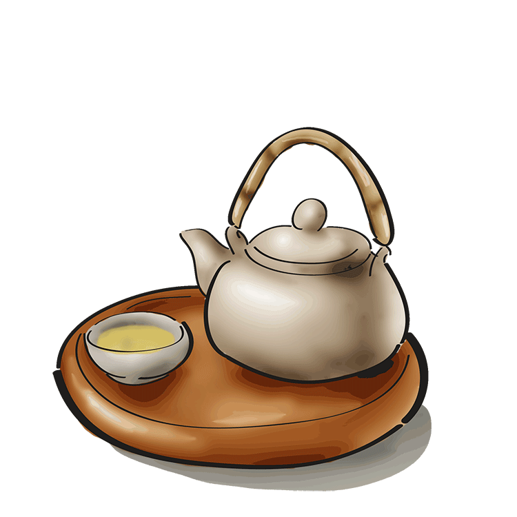

茶具认知

紫砂壶
主泡器具

品茗杯
品饮器具

茶道六君子
辅助工具

茶海
分茶器具
冲泡七式
壹
茶礼十规
斟茶七分满三分人情暖
茶量标准：70%容量
持壶角度：45度斜倾
举案齐眉礼敬显诚心
杯托朝向：客方右手侧
奉茶高度：与肩同齐
茶器定位阴阳有序
主泡器：青龙位（左）
公道杯：白虎位（右）
茶道组：朱雀位（前）
三龙护鼎持杯之道
拇指食指握杯沿
中指托底谓之三才
五不原则避忌守礼
- ✖ 壶口对人
- ✖ 逆时针斟茶
- ✖ 单手持杯
先客后主续茶之序
尊长者优先
顺时针方向由右及左
涤器净心洁具之道
温杯顺序：盖碗→公道杯→品茗杯
清洁手法：内旋三周
长幼有序奉茶之序
- 尊长者先
- 女士优先
- 顺时针轮转
叩指谢茶受茶之礼
长辈赐茶：五指并拢轻叩桌面三下
平辈受茶：食中二指曲叩两次
三转谢杯品毕之仪
1. 杯底向主示饮尽
2. 轻旋杯身赏器形
3. 原向奉还表谢意

×